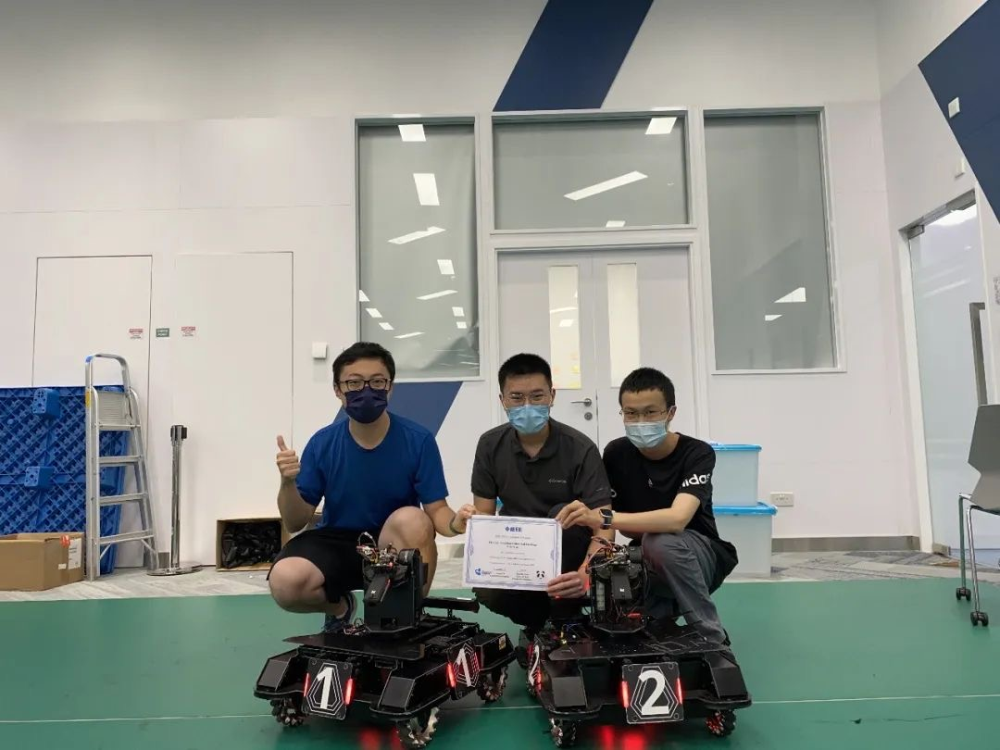
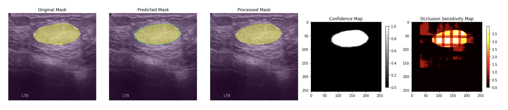
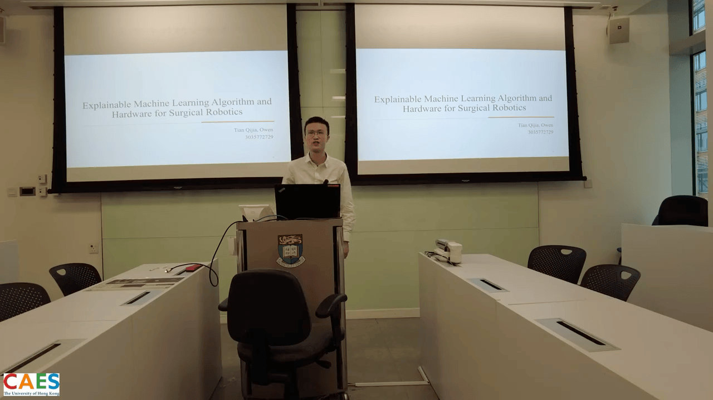

EDUCATION
The University of Hong Kong, Sept 2024 - June 2025 (Estimated);
Msc in Computer Science, HKU.
The University of Hong Kong, Sept 2020 - June 2024
BENG in Computer Engineering, HKU, with First Class Honor, GPA: 3.74/4.3;
Courses: Senior Design Project (A-); Introduction to Deep Learning for Computer Vision (A+); Algoirithm Design (A); Digital System Design (A+); Computer Architecture (A); Control System I (A+); Probabilistic System Analysis (A+); Signal and Linear Systems (A-).
PROJECT EXPERIENCE
Developer, Senior Design Project - Explainable Machine Learning Algorithm and Hardware For Surigical Robot, Hong Kong
2023.09-2024.04
- Developed an AI-driven segmentation approach tailored for breast tumor delineation, focusing on efficiency and interpretability;
- Designed and implemented an Attention UNet model to achieve high segmentation accuracy while addressing computational constraints in medical imaging tasks;
- Conducted extensive experimentation, including data preprocessing, model training, and evaluation;
- Achieved high and stable accuracy in segmenting breast tumor images. However, the Intersection over Union (IoU) metric indicated areas for improvement;
- Developed a hardware system prototype for a surgical robot, including motor control, sensor integration, and real-time data processing;
- Highlighted the need for continued research to enhance model interpretability and expand its applicability across various medical imaging modalities.
Research Assistant, AI-Powered Smart Petition Management System, Ningbo
2022.01-2022.12
- Developed an AI-driven system to streamline petition management by integrating data analytics and automation;
- Employed a unique approach to classifying over 700 types of petition work orders, achieving high accuracy in archiving;
- Implemented a visual presentation mode to optimize workflow, enhancing petition business management;
- Integrated data from various sources, including petition records, historical cases, and policy data;
- Utilized a text mining system for pre-processing and analysis, including text classification and summarization;
- Anticipate a 150% increase in sales performance over the next two years as a direct result of the project’s success;
- Personal contributions: Led the initial requirements gathering and analysis; played a key role in algorithm research and code design within the model framework.
Developer, Design of a Self-defined Linux Shell, Hong Kong
2022.10-2022.11
- Developed and managed a custom Linux shell;
- Coordinated and oversaw multiple concurrent processes;
- inter-process communication through signals and pipes;
- Gathered and analyzed runtime statistics for each process.
Member, Summer Engineering Training, Hong Kong
2022.06-2022.07
- Virtual Instrumentation (VI): Gained proficiency in coding and hardware development for virtual instrumentation circuits;
- Practical Networking (NET): Acquired skills in designing and configuring data networks;
- Microcontroller (MIC): Developed expertise in designing and programming microcontrollers;
- Internet of Things (IoT): Learned to program and configure Raspberry Pi for IoT applications;
- Schematic Drawing (PCB): Gained knowledge in creating circuit schematics using PCB software.
Research Assistant, Research on Intelligent Maintenance and Irrigation Techniques for Elevated Greenery along Waterfronts, Ningbo
2021.12-2022.06
- Developed an intelligent irrigation solution for elevated greenery, and utilized IoT technology to optimize water usage;
- Implemented a Transformer-based model for water demand prediction, enabling precise and on-demand irrigation;
- Utilized position encoding and an encoder-decoder framework to capture temporal information and improve prediction accuracy;
- Trained a predictive model using historical environmental data, achieving reliable results for real-world applications;
- Designed an intelligent irrigation system that reduces operational workload and proactively identifies faults, leading to a reduction in plant mortality;
- Led the initial requirements gathering, conducted algorithm research, oversaw code design, and managed on-site IoT sensor setup and debugging;
- Personal contributions: Spearheaded the initial requirements gathering and analysis; played a key role in algorithm research and specific code design within the model framework, and supervised the setup and debugging of IoT sensors on-site.
INTERNSHIPS
Fintech Intern, China Construction Bank Corporation, Ningbo
2023.07-2023.08
- Conducted website and system testing using Jmeter and Python;
- Collaborated with the development team to identify and resolve software issues, and facilitated the optimization of the banking platform’s functionality;
- Assisted in the analysis of user feedback and usage data, recommended improvements and refinements to enhance the overall user experience;
- Participated in meetings and discussions with senior developers and fintech experts, gaining insights into the latest trends and innovations in the financial technology industry.
Software and Hardware Development Intern, Ningbo Zhongda Leader Intelligent Transmission Co., Ltd., Ningbo
2023.06-2023.07
- Participated in motor manufacturing, design, and testing;
- Cooperated with the engineering team to design and prototype motor components, and implemented creative solutions to enhance motor performance and efficiency;
- Conducted testing and quality assurance procedures to ensure that motors met industry standards and customer expectations.
HONORS & AWARDS
| Faculty of Engineering Peer Mentorship Programme Certificate 2022-2023 | 2023.07 |
| Dean’s Honors List 2021-2022 | 2023.02 |
| The 2022 RobotMaster Sim2Real Challenge First Prize | 2022.08 |
| Dean’s Honors List 2020-2021 | 2022.01 |
EXTRACURRICULAR ACTIVITIES
| Faculty Student Adviser (FSA), Faculty of Engineering, HKU, Hong Kong | 2022.09-2024.06 |
| Assistant, Guizhou Counterpart Assistance Activities, Ningbo Public Security Bureau, Ningbo | 2021.07 |
SKILLS & LANGUAGES
- Languages: Mandarin (Native), English (Work language), Cantonese (Basic)
- IT skills: Pytorch, SQL, VHDL, MATLAB, C, Python
APPENDIX

The 2022 RobotMaster Sim2Real Challenge First Prize Team
The 2022 RobotMaster Sim2Real Challenge First Prize Team

Part of the results of the Final Year Project
Part of the results of the Final Year Project

Final Year Project Presentation
Final Year Project Presentation